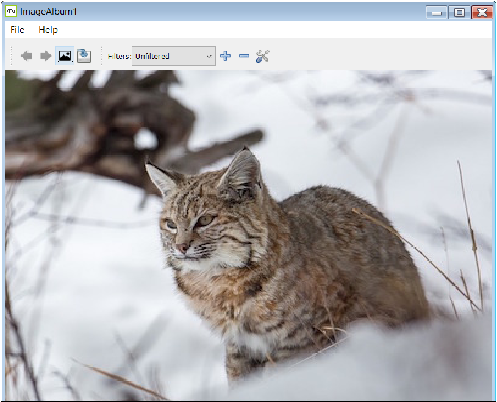
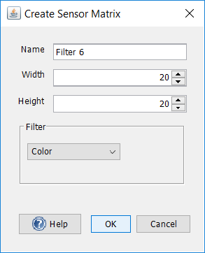

Image World
ImageWorld is a tool that allows for the creation of neural network representations of images. ImageWorld works by converting parts of an image into numbers, which can then be fed into a neural network group coupled to that image. The network's pattern and degree of activation is influenced by the contrast in colors and shades, as well as any filters that may be applied on the image.

ImageWorld has two main components: a window for displaying an image and applying filters and a network coupled to said image. Each coupling is specific to the network-image pair, so changing the image, applying subsequent filters, or creating a new network will require creating a new coupling.
Filters are sensor matrices with each pixel corresponding to a sensor which activates its neuron counterpart when coupled to a network. The number of pixels are determined by the width and height values of the filter in the Edit Sensor Matrix tab. The higher the WidthxHeight value, the more pixels are represented and the clearer the image. Conversely, the lower the WidthxHeight value, the more blocky the image.
The Image Album window is where images are loaded and processed (filters are applied). A default image of a bobcat is loaded upon opening, but any image of PNG format can be loaded. The default image is unfiltered, but filters, or sensor matrices, can be added by selecting one of the several built-in filters or by customizing one manually.
To load an Image:Click on the "Load Images" icon next to the green arrows on the upper left of the Image Album toolbar. Select an image of the PNG format. Alternatively, click on the file button on top of the green arrows on the toolbar and click on "Load Images..." Then select an image of the PNG format.
To apply filters:Select a built-in filter by clicking on the Filter dropdown on top of the Image Album toolbar and selecting one of the pre-made sensor matrices: Gray150x150, Color100x100, Threshold10x10, and threshold250x250. Alternatively, a filter can be customized by clicking on the "Add Sensor Matrix" button (represented by a + sign) located by the Filter dropdown on the toolbar. A window will appear allowing for edits to be made to the following parameters:

Name: A string descriptor/label associated with the filter
Width: Determines the width of the image filter in pixels
Height: Determines the height of the image filter in pixels
Filter: Determines the type of image filter, there are three options: Color, Gray Scale, and Threshold
Types of Filters:
Color: Applies a filter with color
Gray Scale: Applies a filter in monochromatic shades from black to white
Threshold: Applies a filter in black-and-white without shading. The threshold minimum of 0.0 applies an all-white filter, and the maximum of 1.0 applies an all-black filter, therefore, a value of 0.5 is recommended for threshold.
Once a filter is applied, further edits can be made by clicking the Edit Sensor Matrix button by the Add Sensor Matrix button.